OpenStack @Red Hat
OpenStack Summit 2013
Brian Stevens, @addvin
CTO, VP Worldwide Engineering, Red Hat
20 years of disruption
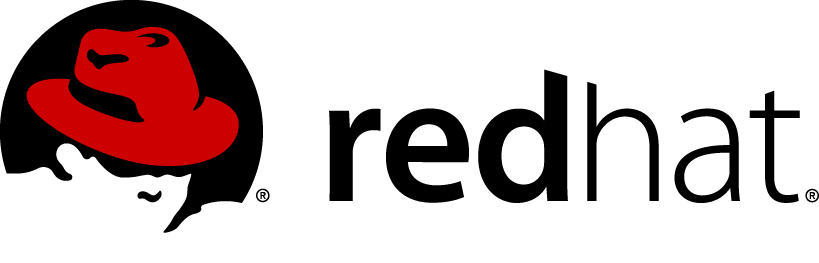2013
BEFORE we talk about TODAY. . .
2012
2011
2010
2010
J Curry calls me with an idea:
"To produce the ubiquitous open source cloud computing platform that will meet the needs of public and private cloud providers regardless of size, by being simple to implement and massively scalable."
2011
- In August Red Hat assigns the first developer to the OpenStack community
 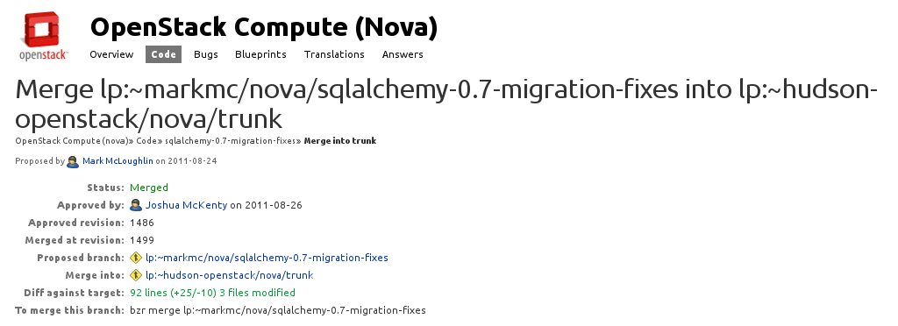
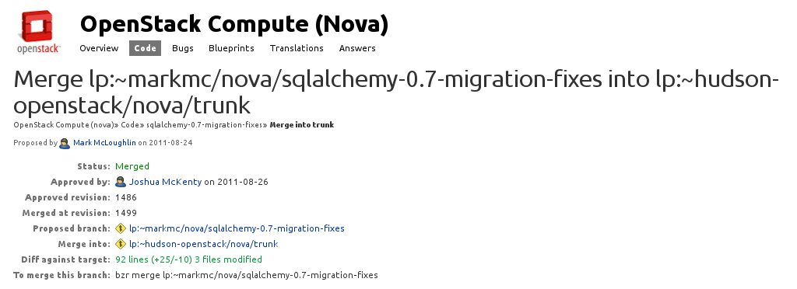
2011
- In August Red Hat assigns the first developer to the OpenStack community
- Internal cloud proposal on 8/25/11
Support for OpenStack -- Red Hat Confidential – Stevens 8/25/11
"In the last 12 months, the OpenStack project has executed a great bootstrapping effort where it has quickly become a globally recognized brand and a vibrant, rapidly growing user and development community. In recognition, we need to make some changes across our product strategy, technical architecture, community activity and marketing and communications. These changes can best be summarized as embracing OpenStack within our development activity, product plans, and partnerships."
Enthusiasm builds
"I'm incredibly relieved and excited to see this."
"This is really really good."
"First thought. Wow. Let's do this."
2011
- In August Red Hat assigns the first developer to the OpenStack community
- Internal cloud proposal on 8/25/11
- Red Hat joins Essex Design summit in Boston
- Rackspace begins discussing spinning up the foundation
2012
- Essex ships - first release with Red Hat code
- Birth of the OpenStack Foundation
- Red Hat joins at the Platinum level
- Folsom release
- Red Hat identified as second-largest Folsom contributor
2013
Grizzly release, Red Hat improves contribution level
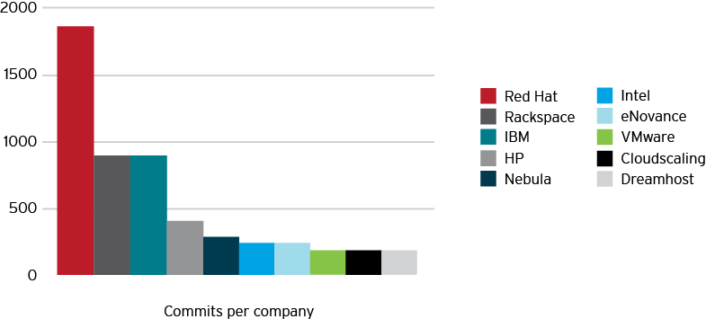
http://bitergia.com/public/reports/openstack/2013_04_grizzly
PAUSE
Let's talk about the Red Hat model
Vendors take various approaches to open source software:
- Some optimize their hardware
- Some use open core to upsell proprietary add-ons
- Some invest in focused areas
- Some contribute very little--they solely ship and support
- And some go ALL IN
Red Hat life cycle
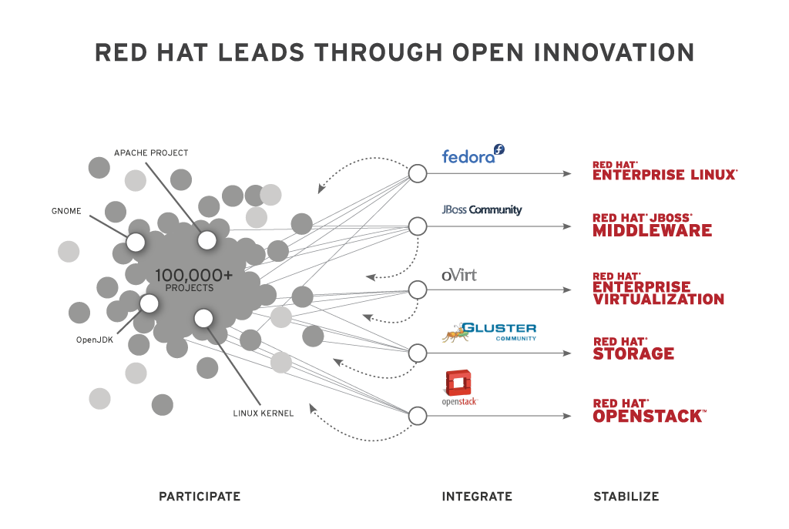Shadowman update
Reached $1.1B in FY12
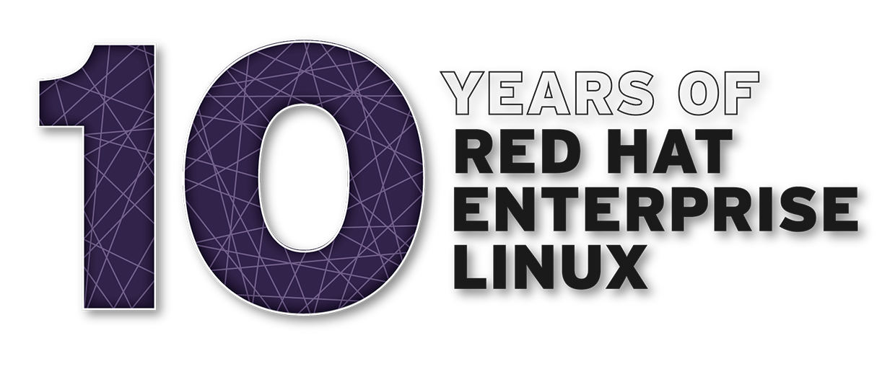Is open source a business model?
No.
It is the best DEVELOPMENT model on the planet.
Open source encourages collaboration.
Collaboration leads to modular innovation that customers can consume incrementally.
Open source is defining the future of IT architecture.
Linux
OpenStack
Hadoop
Rails
MongoDB
Git
Cassandra
What do these have in common?
- They are all examples of next-generation IT solutions.
- They are all open source.
- They were started by users and developers, not companies.
Cloud without open source software?
- No Amazon
- No Rackspace
- No Google
- No Yahoo!
- No Salesforce.com
- No LinkedIn
- No Pandora
- No Twitter
- No Facebook
Introducing RDO
- RDO is a community distribution of upstream OpenStack.
- Get the latest upstream bits instantly on your server.
- Provided as packages for easy installation on Red Hat Enterprise Linux and enterprise Linux rebuilds.
Upstream milestones
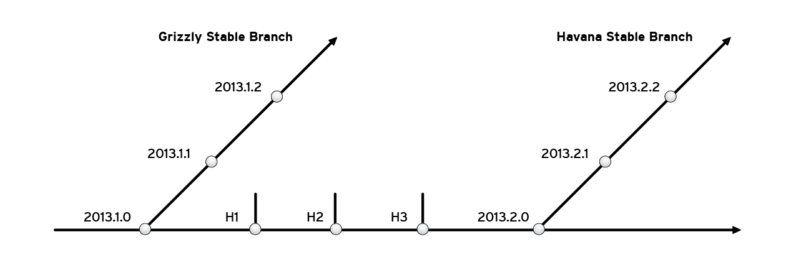Upstream milestones + RDO
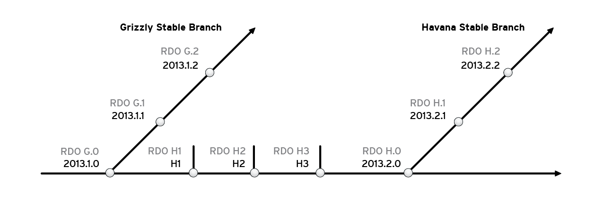To get RDO, go here:
What about customers?
Last year, Red Hat announced we would offer OpenStack as a subscription.

Red Hat OpenStack
- The initial release was based on Folsom.
- Previews were available as a free download.
- We collaborated with customers under our lighthouse program.
- That lighthouse program included up to 25 handheld customers.
Upstream milestones + RDO
Upstream milestones + RDO + Red Hat OpenStack
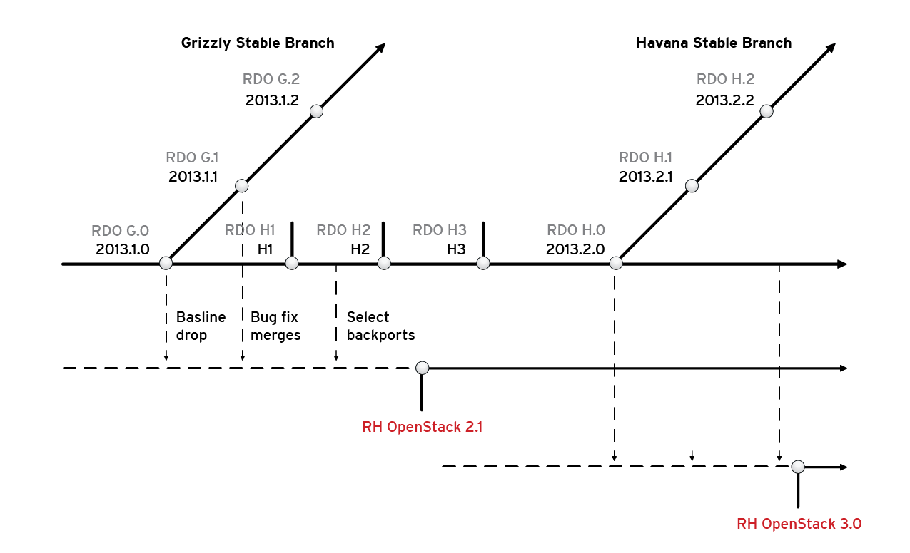Red Hat OpenStack now enters early adopter phase
- Early adopters will have access to standard Red Hat support.
- This program will be available for up to 200 qualified customers.
But what about the ECOSYSTEM?
We are building a certified partner program.
[[ TODO: a slide on what that looks like and who is in it (partner logos -- need list of partner names? ]]
About a year before we got involved in OpenStack
Red Hat wanted to make development easier.
Developers should be writing code...
...without worrying about deployment and infrastructure.
IT needs an architecture of continuous deployment.
OpenShift by Red Hat helps
both development and IT
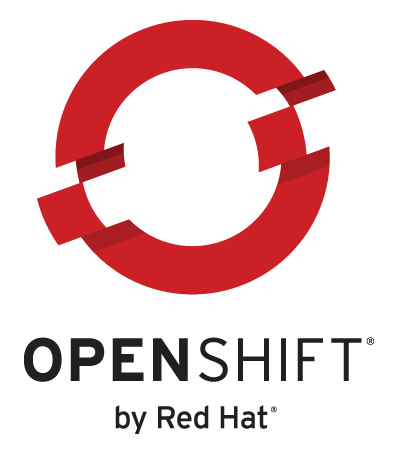
- Develop in Java, Ruby, P*, Node.js
- Use GIT, Eclipse, or a Web IDE
- Cartridge stacks from Linux
- Security from SELinux
- QoS from cgroups
- Containers from LXC
250,000+ active applications
OpenShiftRunning on OpenStack
OpenShift can elastically flex as the application demands.
This is a test video and not the actual video that goes here.
Red Hat Cloud architecture
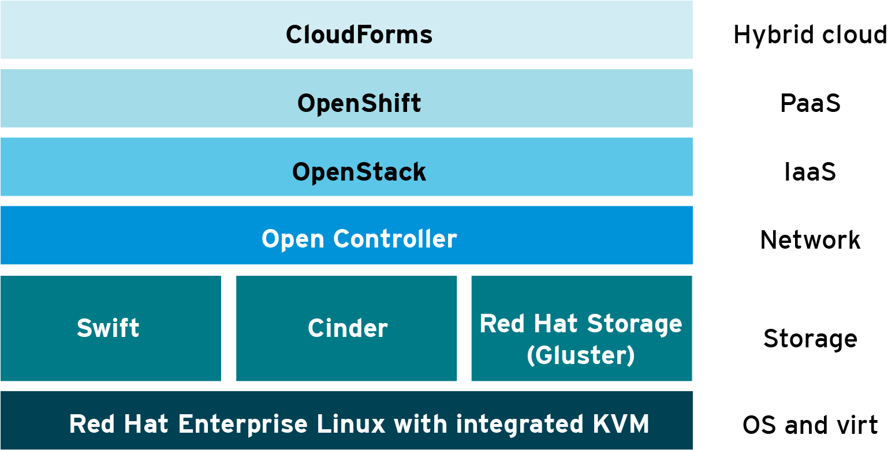Grizzly:
480 developers
7,620 updates
Some faces of Grizzly
Thank you
This presentation is running on OpenShift.
It was developed in HTML5 with reveal.js.
Brian Stevens, @addvin